A hundred unlikely heroes. One Blight-touched wild.
Nothing has to die here — everything can be calmed.
What it is
Tactics you can read.
A world you'll want to protect.
Fauna Fantasy is a turn-based tactics RPG with a roguelite heart and a collectible-card engine — played on a phone, a Mac, a television, or floating in your room. Isometric grid battles where height, facing, elements and living surfaces decide everything. Each expedition is a run through three biomes; each run brings home cards that make the next run stronger.
The tone is cosy-heroic: Disney-feature warmth crossed with a classic Japanese tactics RPG. Peril without gore. Humour from character, never cynicism. Defeated beasts are calmed — violet motes lift from them, their eyes clear, and they bound away. Fallen heroes are carried home on a swirl of leaves.
Every outcome is predictable before you commit: hit chances, damage ranges, surface reactions, the timeline. Depth comes from combining clear rules, not hidden ones.

Readable tactics
Terrain, height, facing, twelve elemental schools and reactive surfaces — puddles that conduct, oil that burns, mist that muffles. Every tool you need is visible. Every clever trick is legal, and the game will show you the maths.
One more run
Three biomes, branching routes, camp stories, wild duels, five mini-games, boons, relics and Wild Tiers. A failed run still pays out and teaches you something. Then the forest regrows, and you pack your four.
A binder of small treasures
100 heroes, weapons, charms, crests, relics and dragon summons — every card painted by hand for this project, some fully holographic. Favourites can be raised to ★5 Prismatic over months. No card is ever sold for power alone.
The Arena
Your real collection goes to work against real people: Quick Match by team power, Friend challenges with SharePlay, and take-turns matches that survive both of you closing the app. Deterministic lockstep — no server, no desyncs, no waiting.
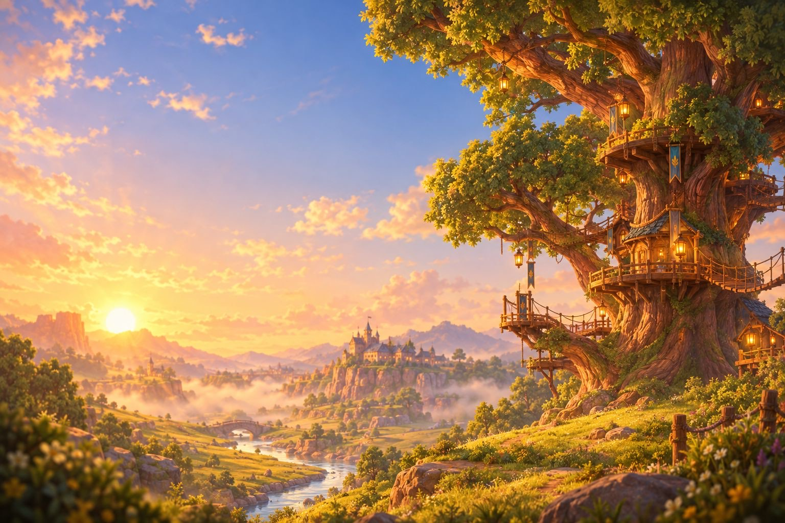
The story
When the Wyrms went quiet
The Everwild once sang with eight great voices — the Eight Wyrms, elemental dragons who did not rule the land but kept time for it. Warmed the forges. Turned the tides. Woke the spring. Brought the dusk, and with it rest.
Now a creeping rot called the Blight turns the gentle beasts of the wild feral. It began with a grieving king who went down into the Well of Endings and did something no keeper had ever done: he closed it. He forbade anything to end. And the world's endings — tiredness, decay, sorrow — pooled beneath the roots like water behind a dam, and festered.
A sanctuary village of humans and fauna-folk sends its bravest through the living Rootgate: a teen squire in armour one size too big, a cat grandmaster who eats apples mid-battle, a foxy rogue with nine kinds of exploding tea. Calm the wild. Free the Wyrms. And face King Rotcrown, who wanted nothing he loved ever to end.
"He tried to save the rose by never letting it close, and so it never opened again." — Elder Mossback, keeper of the Wild Accord
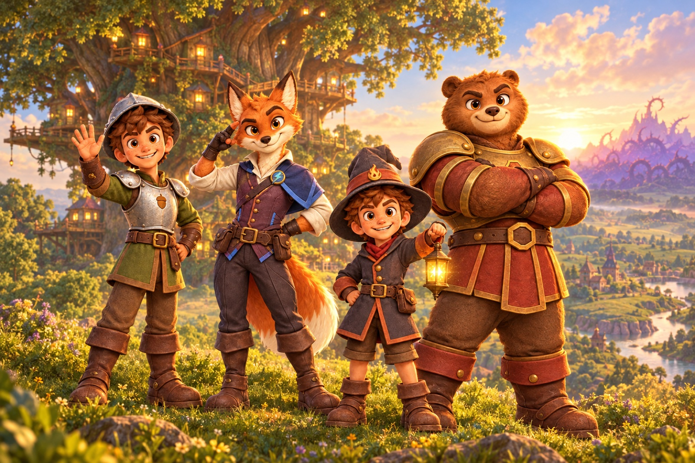
The Everwild
Nine lands, nine moods
Each expedition crosses three of them, chosen from a starting route and a chain of unlocks. Every land ships with its own painted horizon line, its own wildlife, its own sealed Wyrm — and its own boss, corrupted from the seal below.
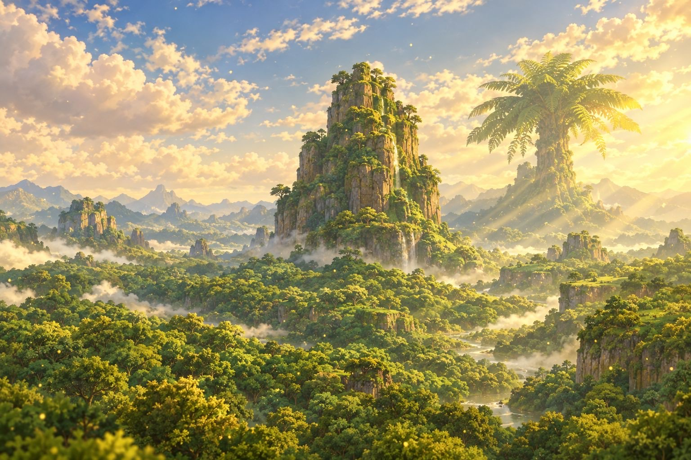
FernwoodGrass · Act I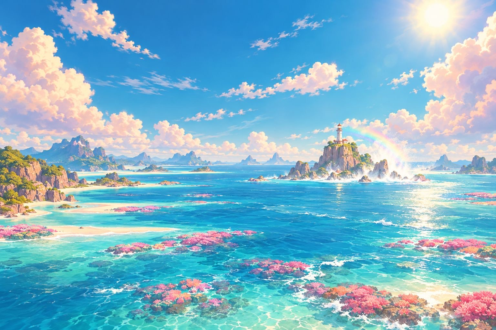
Coral ShallowsWater · Act I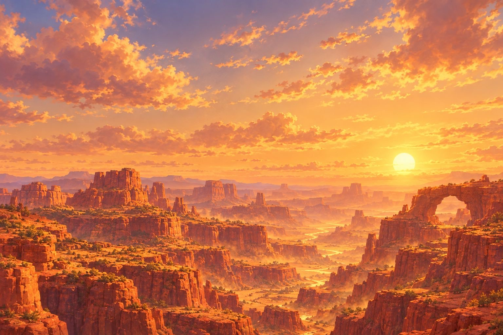
Amber CanyonsEarth · Act I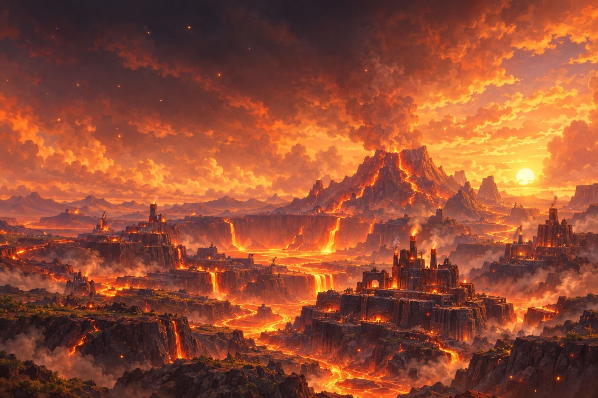
Emberforge CalderaFire · Act II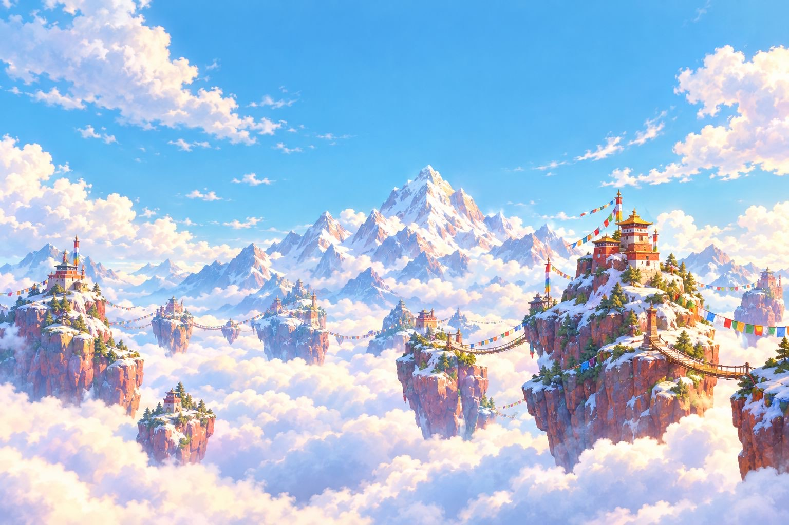
Skyreach PeaksWind · Act II StormspireElectric · Act II
StormspireElectric · Act II
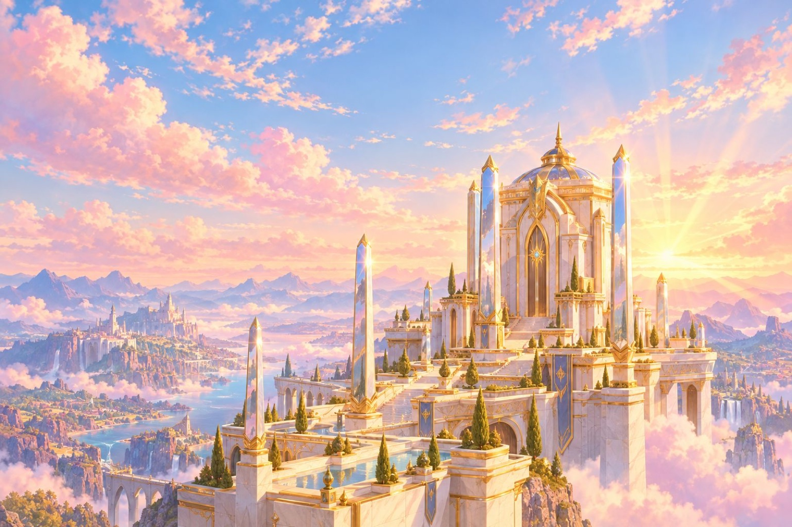
Sunspire SanctumLight · Act III Gloomroot HollowDark · Act III
Gloomroot HollowDark · Act III
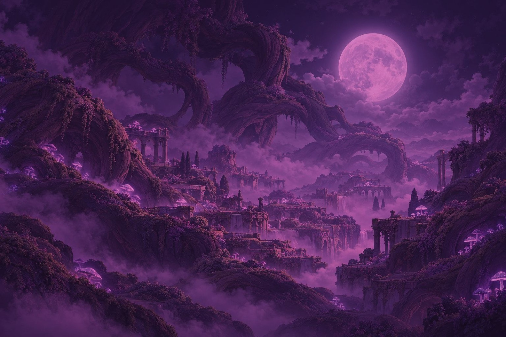
The BlightheartThe Unending · finaleThe hundred
No chosen ones. Just neighbours.
Farm-girl knights and hedgehog spearmen. A three-eyed rabbit samurai, a dormouse who tends a pack altar, an axolotl who soaks raptors and puddles with the same spell. One hundred heroes — each with a painted card, a personality, and a way to fit in a party. Twenty job schools, eight elements, four rarities, zero fillers.
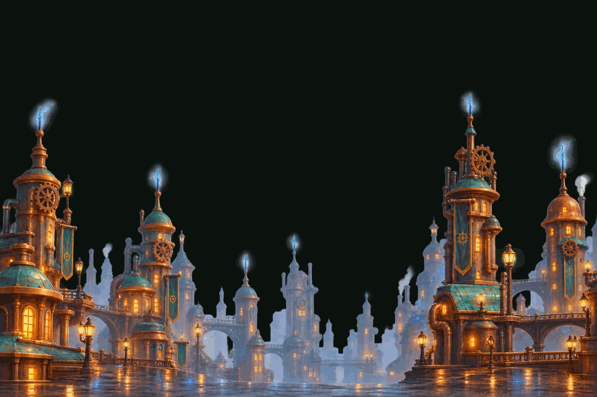
The Arena
Poke the hive.
Once you've befriended the wild, field your favourites against a friend — or a stranger, matched by team power. Two players, four heroes each, a mirrored biome board, and the game's own battle rules. Live Quick Matches run a 30-second unit clock; Friend matches can be taken turns over a day, saved at every unit-turn.
All of it runs on deterministic lockstep: the two devices exchange actions — a few kilobytes per match — and compare state hashes after every turn. No server needed, and a desync is technically impossible.
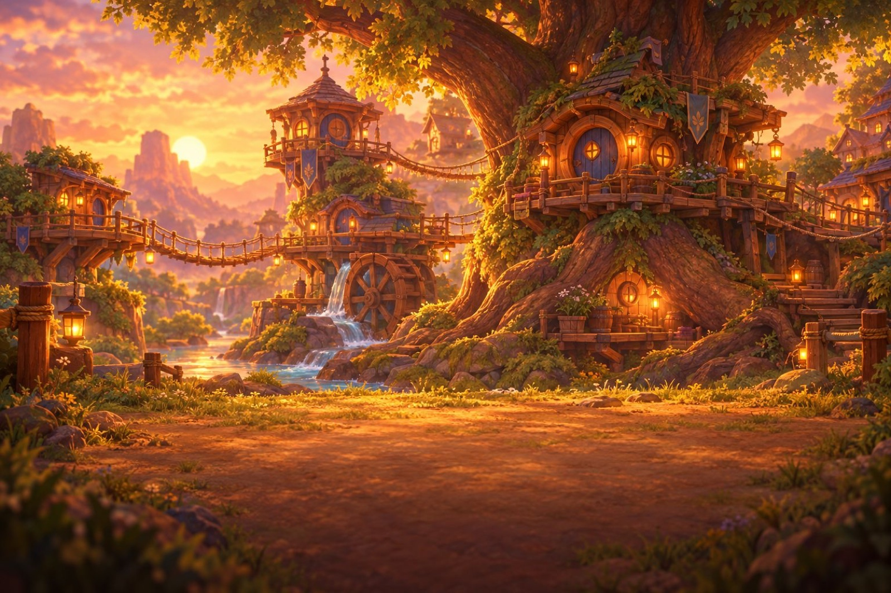
Grovehaven
The Rootgate is open.
A work in progress by a small team that cares more about pride of craft than anything else. The game is in development for iPhone and iPad (including iPhone Duo), Mac, Apple TV and Vision Pro — this site previews where it's headed.